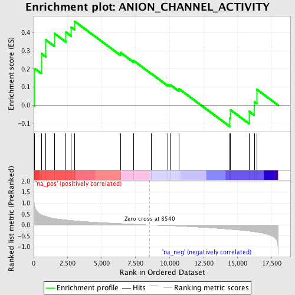
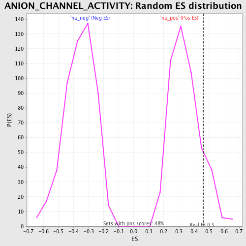

| | | Dataset | GSEA_Cushing_prerank_FC |
| Phenotype | NoPhenotypeAvailable |
| Upregulated in class | na_pos |
| GeneSet | ANION_CHANNEL_ACTIVITY |
| Enrichment Score (ES) | 0.46354946 |
| Normalized Enrichment Score (NES) | 1.3497994 |
| Nominal p-value | 0.12815127 |
| FDR q-value | 0.21431056 |
| FWER p-Value | 1.0 |
Table: GSEA Results Summary

Fig 1: Enrichment plot: ANION_CHANNEL_ACTIVITY
Profile of the Running ES Score & Positions of GeneSet Members on the Rank Ordered List
| PROBE | GENE SYMBOL | GENE_TITLE | RANK IN GENE LIST | RANK METRIC SCORE | RUNNING ES | CORE ENRICHMENT | | 1 | CLCA2 | | | 77 | 0.859 | 0.2014 | Yes |
| 2 | BEST1 | | | 563 | 0.465 | 0.2858 | Yes |
| 3 | CLCNKA | | | 897 | 0.389 | 0.3603 | Yes |
| 4 | FXYD3 | | | 1535 | 0.296 | 0.3956 | Yes |
| 5 | CLCN4 | | | 2379 | 0.228 | 0.4033 | Yes |
| 6 | CLCN3 | | | 2762 | 0.206 | 0.4312 | Yes |
| 7 | GLRA1 | | | 3007 | 0.192 | 0.4635 | Yes |
| 8 | CLCN2 | | | 6383 | 0.065 | 0.2911 | No |
| 9 | BSND | | | 7355 | 0.036 | 0.2455 | No |
| 10 | CLCN1 | | | 8658 | -0.003 | 0.1738 | No |
| 11 | GLRA2 | | | 9883 | -0.031 | 0.1130 | No |
| 12 | CLCA4 | | | 10062 | -0.035 | 0.1116 | No |
| 13 | PKD2 | | | 10690 | -0.055 | 0.0899 | No |
| 14 | CFTR | | | 14432 | -0.196 | -0.0716 | No |
| 15 | NMUR2 | | | 14487 | -0.199 | -0.0270 | No |
| 16 | FXYD1 | | | 15846 | -0.283 | -0.0350 | No |
| 17 | GLRB | | | 16228 | -0.312 | 0.0186 | No |
| 18 | CLCNKB | | | 16415 | -0.329 | 0.0869 | No |
Table: GSEA details [plain text format]

Fig 2: ANION_CHANNEL_ACTIVITY: Random ES distribution
Gene set null distribution of ES for ANION_CHANNEL_ACTIVITY